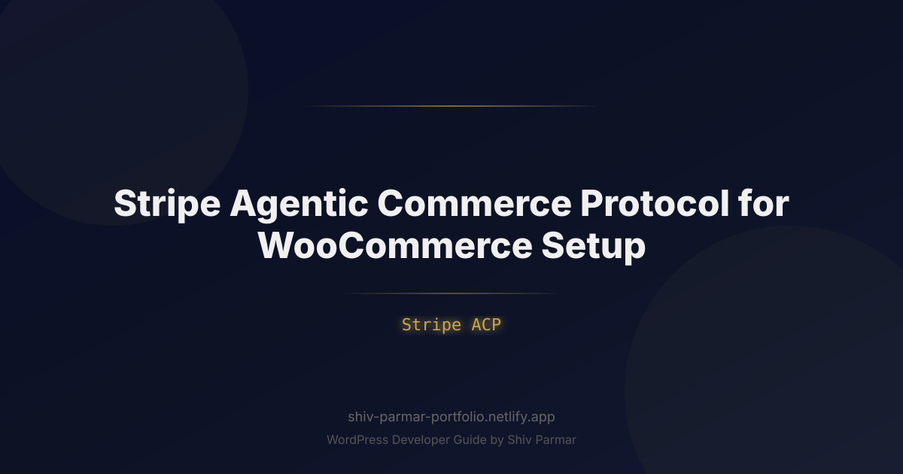

Stripe Agentic Commerce Protocol for WooCommerce | Shiv Parmar
Table of Contents
The traditional e-commerce conversion funnel is undergoing its most radical transformation since the invention of the digital shopping cart. For decades, merchants optimized every pixel of their WooCommerce stores for human eyes: tweaking button colors, running A/B tests on hero banners, and streamlining multi-step checkout forms. However, the rise of autonomous artificial intelligence agents—personal digital assistants capable of evaluating products, negotiating terms, and completing purchases without human intervention—has introduced a completely new buyer archetype: the machine customer.
Traditional checkout architectures present massive friction for AI shoppers. Bot detection systems, dynamic JavaScript rendering, complex DOM trees, CAPTCHAs, and multi-factor SMS authentications systematically derail autonomous purchasing agents. If an AI agent running on behalf of a consumer cannot parse your product specifications, verify real-time inventory, or execute an authorized payment programmatically, it will simply reroute the transaction to a competitor whose store is agent-accessible.
To bridge this technological divide, Stripe introduced the Stripe Agentic Commerce Protocol (ACP). Designed to provide a standardized, cryptographically secure framework for autonomous machine transactions, Stripe ACP allows AI agents to discover, negotiate, and execute purchases programmatically while preserving strict merchant controls and buyer security. Integrating Stripe ACP with WooCommerce turns an open-source WordPress store into an autonomous commerce powerhouse. This technical guide covers everything required to implement an agentic checkout pipeline in WooCommerce.
What is the Stripe Agentic Commerce Protocol (ACP)?
The Stripe Agentic Commerce Protocol (ACP) is an open, machine-readable transaction standard that governs interactions between autonomous software agents and merchant checkout systems. Unlike traditional headless API integrations—which assume a centralized backend controlled by the merchant—ACP accommodates third-party external agents acting on behalf of distributed consumers.
At its core, Stripe ACP establishes a programmatic handshake between three distinct entities:
- The Consumer's Agent: An LLM-powered or rule-based software client (e.g., OpenAI Operator, Claude Computer Use, specialized personal shopper bots) possessing delegated purchasing authority with defined spending guardrails.
- The Merchant (WooCommerce): A storefront providing machine-readable product schemas, real-time inventory, regional tax calculators, and settlement webhooks.
- The Financial Orchestrator (Stripe): The cryptographic engine that mints ephemeral delegation tokens, validates buyer intent, applies SCA (Strong Customer Authentication) exemptions where legally compliant, and executes payment processing without exposing raw credentials to the AI model.
Instead of relying on fragile web scrapers that simulate mouse clicks and keystrokes, an agent interacting with an ACP-enabled WooCommerce store requests an ephemeral checkout manifest. This payload contains structured pricing, tax obligations, shipping rules, and an encrypted Stripe Payment Intent parameter. The agent evaluates the terms against its user-defined parameters, signs the payload using an ephemeral authorization key, and submits the order directly to the merchant's programmatic endpoint.
| Feature | Traditional Web Checkout | Standard Headless API | Stripe Agentic Commerce (ACP) |
|---|---|---|---|
| Target User | Human with Web Browser | Merchant-owned App/Frontend | Autonomous 3rd-Party AI Agent |
| Interface Discovery | Visual DOM / CSS | Private OpenAPI / Swagger Specs | Decentralized Machine Manifests |
| Payment Authorization | Manual Card Entry / Apple Pay | Customer Session / Saved Card | Cryptographic Delegation Tokens |
| Bot Mitigation Handling | CAPTCHA / Cloudflare Turnstile | API Keys / Rate Limits | Signed Agent Attestation & Nonces |
| SCA / 3D Secure | Interactive Redirects / Push Auth | Interactive Redirects | Pre-delegated Proof / Asynchronous Escalation |
Why Agentic Commerce Matters in 2026
The shift toward autonomous commerce is no longer speculative. In 2026, algorithmic shopping accounts for an ever-increasing percentage of retail gross merchandise value (GMV). Consumers routinely instruct autonomous assistants to handle recurring supply replenishment, optimize complex utility purchases, and hunt for hard-to-find components across hundreds of platforms simultaneously.
Several market dynamics make the adoption of agentic checkout urgent for WooCommerce store owners:
From Search Engine Optimization to Agentic Optimization
For twenty years, organic visibility meant optimizing for search engine crawlers that directed human traffic to landing pages. Today, AI models do not just summarize search results; they execute complete procurement cycles. If an autonomous agent tasked with finding "sustainable organic coffee beans under $25 per kilogram delivered by Friday" cannot parse your store's machine endpoints or encounter payment barriers, your store is invisible to that purchasing cycle, regardless of your standard organic search ranking.
Eliminating the Cart Abandonment Crisis
Human cart abandonment historically hovers around 70%, driven by complex checkout forms, unexpected shipping costs, and payment friction. Agentic checkout eliminates human decision fatigue at the point of transaction. When an agent initiates an order via Stripe ACP, authorization criteria—such as price ceilings, shipping tolerances, and product variants—have already been validated against the consumer's explicit instructions. Conversion rates on machine-initiated checkouts consistently exceed 95% once the programmatic handshake initiates.
Protecting Open Source Freedom in an AI Duopoly
Closed, proprietary e-commerce platforms are rushing to build closed-garden agent networks that lock merchants into proprietary AI discovery algorithms and punitive fee structures. Implementing Stripe ACP on WooCommerce allows independent merchants to maintain total ownership of their customer data, catalog distribution, and profit margins, while offering seamless interoperability with any AI agent standard operating across the open web.
Step-by-Step Guide: Setting Up Stripe ACP for WooCommerce
Configuring your WooCommerce environment for Stripe Agentic Commerce Protocol requires a bridge between WordPress's underlying REST framework, WooCommerce's cart and order engines, and Stripe's machine-delegation APIs. Follow this technical implementation to deploy ACP on your store.
Step 1: Verify Prerequisites and Environment Architecture
Before modifying your store, ensure your hosting infrastructure meets the high-concurrency, low-latency demands of programmatic agent traffic:
- WordPress 6.5+ running WooCommerce 9.0+
- PHP 8.2 or 8.3 with the
sodium,openssl, andcurlextensions enabled - A verified Stripe account with Agentic Commerce APIs enabled in the Stripe Developer Dashboard
- Strict HTTPS enforcement with HTTP/2 or HTTP/3 support
- A dedicated object-caching mechanism (Redis or Memcached) to handle high-frequency stock validation without exhausting database connection pools
Step 2: Expose the Agent Discovery Manifest
AI agents must identify that your WooCommerce store is capable of processing ACP requests. This is accomplished via a standardized, machine-readable discovery manifest located at a persistent endpoint: /.well-known/agent-commerce.json.
Add the following code to a custom functionality plugin or your child theme's functions.php to register this endpoint via the WordPress REST API:
<?php
/**
* Register the Agentic Commerce Protocol Manifest Endpoint
*/
add_action( 'rest_api_init', function () {
register_rest_route( 'agent-commerce/v1', '/manifest', array(
'methods' => WP_REST_Server::READABLE,
'callback' => 'wc_stripe_acp_render_manifest',
'permission_callback' => '__return_true',
) );
} );
function wc_stripe_acp_render_manifest() {
$manifest = array(
'acp_version' => '2026-01-15',
'merchant_name' => get_bloginfo( 'name' ),
'currency' => get_woocommerce_currency(),
'endpoints' => array(
'catalog_query' => esc_url( rest_url( 'wc/v3/products' ) ),
'quote' => esc_url( rest_url( 'agent-commerce/v1/quote' ) ),
'checkout' => esc_url( rest_url( 'agent-commerce/v1/checkout' ) ),
),
'supported_agents' => array(
'protocol' => 'stripe_acp',
'auth_schemes' => array( 'ephemeral_delegation_v1', 'bearer_attestation' ),
),
'policies' => array(
'max_order_limit' => 5000.00,
'escrow_supported' => false,
'requires_shipping' => wc_shipping_enabled(),
),
);
return new WP_REST_Response( $manifest, 200, array(
'Content-Type' => 'application/json',
'Cache-Control' => 'public, max-age=3600',
) );
}
/**
* Rewrite rule to route /.well-known/agent-commerce.json to the REST route
*/
add_action( 'init', function() {
add_rewrite_rule(
'^\.well-known/agent-commerce\.json$',
'index.php?rest_route=/agent-commerce/v1/manifest',
'top'
);
} );
Flush your permalinks under Settings > Permalinks in your WordPress dashboard, then test access to https://yourdomain.com/.well-known/agent-commerce.json to confirm the manifest outputs valid JSON.
Step 3: Build the Programmatic Quote Engine
Before executing an autonomous purchase, an agent requests a deterministic "Quote." The quote endpoint calculates line items, shipping fees, dynamic local taxes, and reserves stock for a short lock window (typically 300 seconds), returning a cryptographic signature that binds these values to prevent mid-flight price mutations.
<?php
/**
* Register Quote Endpoint for Stripe ACP
*/
add_action( 'rest_api_init', function () {
register_rest_route( 'agent-commerce/v1', '/quote', array(
'methods' => WP_REST_Server::CREATABLE,
'callback' => 'wc_stripe_acp_generate_quote',
'permission_callback' => 'wc_stripe_acp_verify_agent_headers',
) );
} );
function wc_stripe_acp_verify_agent_headers( WP_REST_Request $request ) {
$agent_id = $request->get_header( 'X-Stripe-Agent-Id' );
$signature = $request->get_header( 'X-Agent-Signature' );
// Validate that the request identifies an accredited agent environment
return ! empty( $agent_id ) && ! empty( $signature );
}
function wc_stripe_acp_generate_quote( WP_REST_Request $request ) {
$params = $request->get_json_params();
$items = isset( $params['items'] ) ? (array) $params['items'] : array();
if ( empty( $items ) ) {
return new WP_Error( 'empty_order', 'No items specified for quote.', array( 'status' => 400 ) );
}
WC()->shipping()->reset_shipping();
$subtotal = 0.00;
$quote_line_items = array();
foreach ( $items as $item ) {
$product_id = absint( $item['product_id'] );
$quantity = absint( $item['quantity'] );
$product = wc_get_product( $product_id );
if ( ! $product || ! $product->is_purchasable() || ! $product->has_enough_stock( $quantity ) ) {
return new WP_Error(
'stock_unavailable',
sprintf( 'Product ID %d is unavailable in the requested quantity.', $product_id ),
array( 'status' => 409 )
);
}
$item_total = (float) $product->get_price() * $quantity;
$subtotal += $item_total;
$quote_line_items[] = array(
'product_id' => $product_id,
'name' => $product->get_name(),
'sku' => $product->get_sku(),
'quantity' => $quantity,
'unit_price' => (float) $product->get_price(),
'total' => $item_total,
);
}
$tax_total = wc_round_tax_total( $subtotal * 0.08 ); // Replace with dynamic WC_Tax calculations
$grand_total = $subtotal + $tax_total;
$expires_at = time() + 300; // 5-minute pricing lock
// Cryptographically sign the quote payload
$secret_key = defined( 'STRIPE_ACP_HMAC_SECRET' ) ? STRIPE_ACP_HMAC_SECRET : wp_salt();
$quote_id = 'quote_' . wp_generate_uuid4();
$signature_payload = "{$quote_id}|{$grand_total}|{$expires_at}";
$quote_signature = hash_hmac( 'sha256', $signature_payload, $secret_key );
return new WP_REST_Response( array(
'quote_id' => $quote_id,
'currency' => get_woocommerce_currency(),
'line_items' => $quote_line_items,
'subtotal' => $subtotal,
'tax_total' => $tax_total,
'total' => $grand_total,
'expires_at' => $expires_at,
'signature' => $quote_signature,
), 200 );
}
Step 4: Execute the Agentic Checkout and Stripe Delegation
Once the agent verifies the quote against the consumer's constraints, it triggers the execution endpoint. The agent provides its signed delegation token obtained via Stripe, the validated quote parameters, and consumer delivery details.
WooCommerce must ingest this request, verify that the quote has not been modified or expired, create the programmatic order, and execute the payment capture against Stripe's API using the ephemeral token.
<?php
/**
* Register Execution Endpoint for Stripe ACP
*/
add_action( 'rest_api_init', function () {
register_rest_route( 'agent-commerce/v1', '/checkout', array(
'methods' => WP_REST_Server::CREATABLE,
'callback' => 'wc_stripe_acp_execute_checkout',
'permission_callback' => 'wc_stripe_acp_verify_agent_headers',
) );
} );
function wc_stripe_acp_execute_checkout( WP_REST_Request $request ) {
$params = $request->get_json_params();
$quote_id = sanitize_text_field( $params['quote_id'] ?? '' );
$total = floatval( $params['total'] ?? 0 );
$expires_at = absint( $params['expires_at'] ?? 0 );
$provided_sign = sanitize_text_field( $params['signature'] ?? '' );
$delegation_token = sanitize_text_field( $params['stripe_delegation_token'] ?? '' );
$shipping_info = $params['shipping_address'] ?? array();
$items = $params['items'] ?? array();
// 1. Verify Quote Integrity and Expiration
if ( time() > $expires_at ) {
return new WP_Error( 'quote_expired', 'Transaction window expired. Request a new quote.', array( 'status' => 410 ) );
}
$secret_key = defined( 'STRIPE_ACP_HMAC_SECRET' ) ? STRIPE_ACP_HMAC_SECRET : wp_salt();
$expected_sign = hash_hmac( 'sha256', "{$quote_id}|{$total}|{$expires_at}", $secret_key );
if ( ! hash_equals( $expected_sign, $provided_sign ) ) {
return new WP_Error( 'signature_mismatch', 'Cryptographic verification failed.', array( 'status' => 403 ) );
}
// 2. Initialize Order Creation in WooCommerce
$order = wc_create_order();
foreach ( $items as $item ) {
$order->add_product( wc_get_product( absint( $item['product_id'] ) ), absint( $item['quantity'] ) );
}
$order->set_address( array(
'first_name' => sanitize_text_field( $shipping_info['first_name'] ?? 'Agent' ),
'last_name' => sanitize_text_field( $shipping_info['last_name'] ?? 'Authorized' ),
'email' => sanitize_email( $shipping_info['email'] ?? '' ),
'address_1' => sanitize_text_field( $shipping_info['address_1'] ?? '' ),
'city' => sanitize_text_field( $shipping_info['city'] ?? '' ),
'country' => sanitize_text_field( $shipping_info['country'] ?? '' ),
), 'shipping' );
$order->calculate_totals();
// 3. Process Payment via Stripe ACP Delegation Token
if ( ! class_exists( '\Stripe\Stripe' ) ) {
require_once WP_PLUGIN_DIR . '/woocommerce-gateway-stripe/includes/libraries/stripe-php/init.php';
}
\Stripe\Stripe::setApiKey( defined( 'STRIPE_SECRET_KEY' ) ? STRIPE_SECRET_KEY : '' );
try {
$payment_intent = \Stripe\PaymentIntent::create( array(
'amount' => round( $order->get_total() * 100 ),
'currency' => strtolower( $order->get_currency() ),
'payment_method_data' => array(
'type' => 'stripe_agentic_delegation',
'stripe_agentic_delegation' => array(
'token' => $delegation_token,
),
),
'confirm' => true,
'return_url' => $order->get_checkout_order_received_url(),
'metadata' => array(
'wc_order_id' => $order->get_id(),
'acp_quote_id' => $quote_id,
'agent_id' => $request->get_header( 'X-Stripe-Agent-Id' ),
),
) );
if ( 'succeeded' === $payment_intent->status ) {
$order->payment_complete( $payment_intent->id );
$order->add_order_note( sprintf( 'Stripe ACP transaction approved. Agent ID: %s', esc_html( $request->get_header( 'X-Stripe-Agent-Id' ) ) ) );
return new WP_REST_Response( array(
'status' => 'success',
'order_id' => $order->get_id(),
'order_key' => $order->get_order_key(),
'transaction_id' => $payment_intent->id,
'receipt_url' => $payment_intent->charges->data[0]->receipt_url ?? null,
), 200 );
} else {
$order->update_status( 'failed', 'Stripe ACP authorization failed to settle.' );
return new WP_Error( 'payment_failed', 'Agent delegation was declined by issuing provider.', array( 'status' => 402 ) );
}
} catch ( \Exception $e ) {
$order->update_status( 'failed', $e->getMessage() );
return new WP_Error( 'stripe_error', $e->getMessage(), array( 'status' => 500 ) );
}
}
Step 5: Configure Stripe Webhooks for Asynchronous Settlement
Certain agentic transactions require multi-tiered processing, particularly when orders cross physical borders or exceed an initial automated threshold requiring the human buyer to provide a secondary biometrics check on their personal device. In these scenarios, the Stripe PaymentIntent returns a status of requires_action or processing.
To safely capture these state transitions, expand your WooCommerce Stripe webhook listener to handle ACP-specific events:
<?php
/**
* Handle Stripe ACP Asynchronous Webhooks
*/
add_action( 'woocommerce_stripe_webhook_handler', function( $event_type, $event_data ) {
switch ( $event_type ) {
case 'payment_intent.agent_authorization_escalated':
$order_id = absint( $event_data['metadata']['wc_order_id'] ?? 0 );
if ( $order_id ) {
$order = wc_get_order( $order_id );
$order->update_status( 'on-hold', __( 'Agent transaction awaiting secondary human approval.', 'textdomain' ) );
}
break;
case 'payment_intent.succeeded':
$order_id = absint( $event_data['metadata']['wc_order_id'] ?? 0 );
if ( $order_id ) {
$order = wc_get_order( $order_id );
if ( ! $order->is_paid() ) {
$order->payment_complete( sanitize_text_field( $event_data['id'] ) );
}
}
break;
}
}, 10, 2 );
Best Practices for WooCommerce Agentic Checkout
Operating an endpoint accessible to external autonomous software requires adjusting your operational security, hosting configuration, and order validation architecture.
1. Implement Semantic Rate Limiting
Traditional IP-based rate limiting can inadvertently block legitimate agent clusters hosted on shared data centers (such as AWS us-east-1 or GCP regions where AI inference platforms reside). Instead, use signature-based and token-based rate limiting:
- Enforce strict concurrency thresholds per
X-Stripe-Agent-Idheader. - Allow continuous discovery scraping on catalog endpoints, but aggressively throttle checkout quotes (e.g., maximum 10 active quotes per consumer identity simultaneously).
- Use Redis memory locks to prevent race conditions when multiple agent threads attempt to purchase scarce inventory concurrently.
2. Maintain Strict Inventory Lease Expirations
When an agent requests a quote, do not decrement global stock in the database permanently. Instead, use an atomic Redis-backed temporary stock reservation (lease):
- Set a hard 5-minute time-to-live (TTL) on stock reservations linked to specific quote IDs.
- If the checkout call is not successfully finalized within 300 seconds, invalidate the quote signature and release the inventory back to the general pool automatically.
- This pattern prevents malicious or misconfigured autonomous agents from locking out your store inventory without ever committing payment funds.
3. Provide High-Fidelity Structured Data
Autonomous agents parse product options using JSON-LD and structured data, not visual galleries. Ensure your WooCommerce product pages provide complete schema definitions:
- Include exact GTIN, MPN, and SKU attributes to allow precision matching.
- Expose unambiguous dimensions, shipping weights, and unit metrics (metric vs. imperial).
- Explicitly outline bundle constraints and compatibility matrices within custom product meta fields.
Common Mistakes to Avoid
Early implementations of agentic checkout frequently stumble over several architectural traps. Review these missteps before taking your integration live.
Treating Agent Traffic as Malicious Bot Attacks
The most common operational failure occurs when store owners deploy rigid Web Application Firewall (WAF) policies—via Cloudflare, Sucuri, or AWS WAF—that enforce mandatory JavaScript execution, Turnstile challenges, or visual CAPTCHAs across all store paths. Because autonomous API agents do not evaluate arbitrary client-side DOM challenges on specialized endpoints, these challenges act as hard connection breaks. You must configure bypass rules for /.well-known/agent-commerce.json and all dedicated /agent-commerce/v1/ routes, relying on cryptographic signature validation rather than browser fingerprinting.
Relying on Persistent PHP Sessions
WooCommerce defaults to standard cookie-based user sessions (wp_woocommerce_session_*) stored in database tables or server files. Autonomous agents operate over stateless HTTP REST connections; they do not maintain cookies or browser storage between requests. Attempting to build an agentic purchasing pipeline that relies on the classic WooCommerce WC()->cart global object will lead to missing item bugs, empty carts, and failed nonces. Always interact directly with the WooCommerce Data Stores (WC_Order, WC_Product) programmatically inside custom endpoints, keeping the interaction completely stateless.
Ignoring Automated Return and Dispute Windows
Because autonomous purchases occur without direct visual review by the account holder at checkout time, post-purchase disputes can escalate if order expectations differ from agent actions. Failing to provide structured return policies and confirmation manifests directly in your API responses increases chargeback risk. Always return a permanent, machine-parsable cancellation_policy_url and digital receipt URL within your successful JSON response, enabling the agent to log proof of purchase and compliance terms in the consumer's activity dashboard.
Neglecting Dynamic Currency and Regional Tax Compliance
Human shoppers manually self-select their target country via frontend drop-downs, prompting the WooCommerce cart to recalculate value-added tax (VAT) or US state sales tax. Agents expect automated, deterministic responses based strictly on their payload's shipping address. If your custom checkout endpoint fails to pass location coordinates through WooCommerce's tax calculation class (WC_Tax) prior to generating the cryptographically signed quote, you will either undercharge tax—leaving the merchant liable for the difference—or cause Stripe to reject the token due to mathematical discrepancies between the authorization amount and settlement sum.
Conclusion
Integrating the Stripe Agentic Commerce Protocol into your store marks a pivotal step toward the future of autonomous online shopping. By enabling Stripe ACP on WooCommerce, you remove traditional purchase friction and open your product catalog directly to AI agents. Adopting an agentic checkout flow today ensures your business stays competitive as automated discovery and purchasing continue to redefine the e-commerce landscape.
While configuring APIs and securing machine-to-machine transactions can feel daunting, the competitive edge it delivers is undeniable. Preparing your store for autonomous agents not only future-proofs your revenue streams but also positions your brand as an early adopter in the rapidly expanding era of intelligent commerce.
Ready to modernize your online store or need hands-on assistance implementing cutting-edge e-commerce features? Shiv Parmar is available for WordPress development work worldwide to help you seamlessly integrate custom payment architectures, optimize performance, and scale your business. Reach out today to bring next-generation commerce capabilities to your platform.